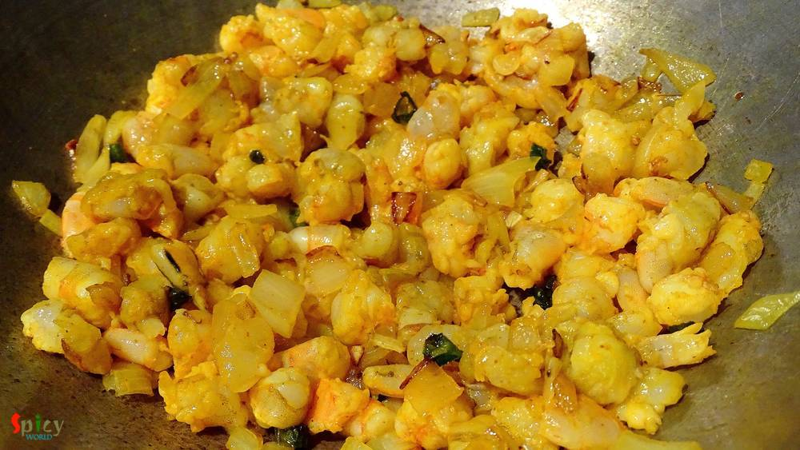
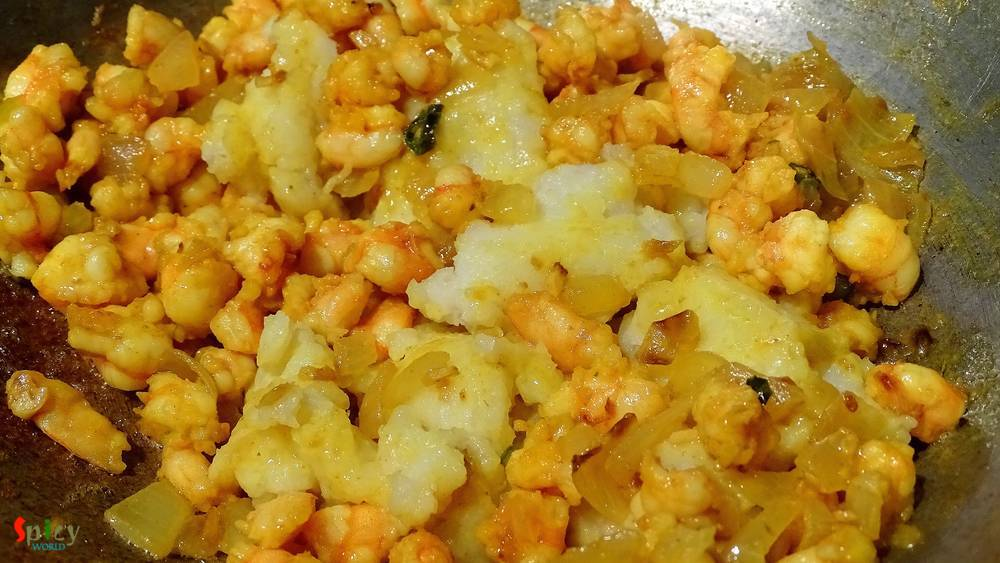
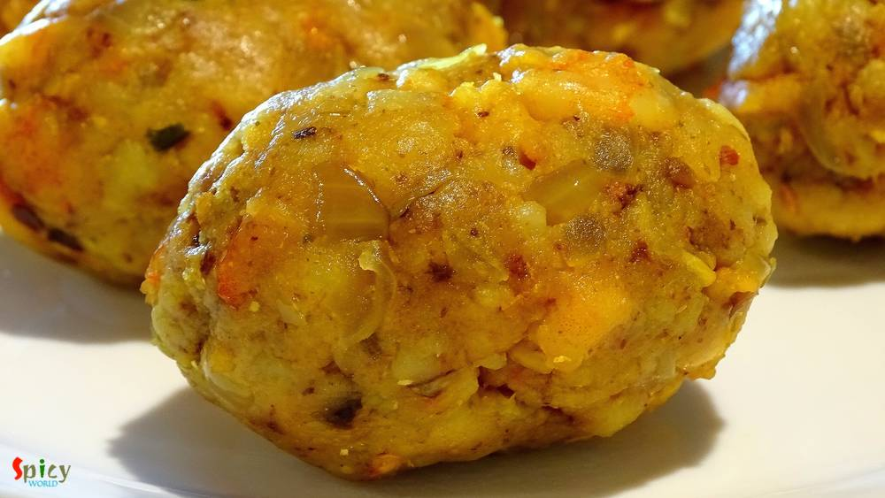
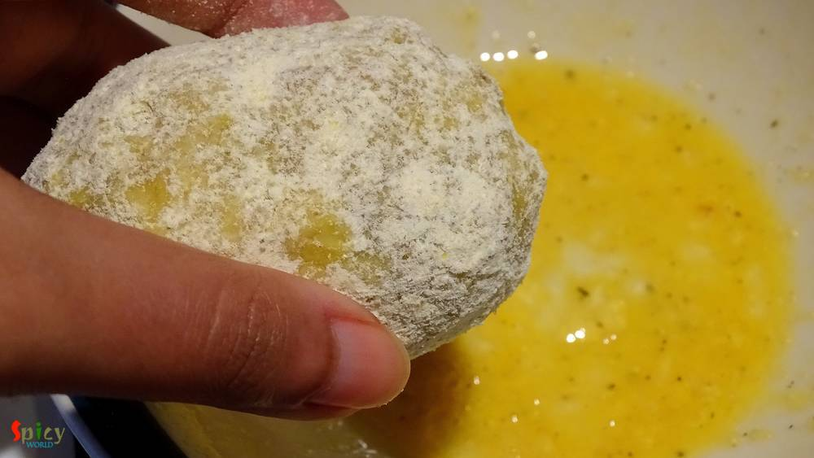

Simple and Easy Recipes
Chingrir Chop / Shrimp Croquettes
© 2016 Spicy World, Published on: Dec 2, 2015
This snack is a very popular street food in West Bengal. You will enjoy these croquettes more from small street food shop / gumti / jhupri , though I don't have any experience of eating 'chingrir chop' from any restaurant. In US, there is no 'gumti', thats why I had to make those in my kitchen and brought the exact taste from Bengal. They were really delicious and we enjoyed them with chilli sauce, but you can also serve them with 'kasundi'. There are many ways of making these croquettes, here is how I made them.

Ingredients
- 20 prawns.
- 1 big boiled potato.
- 5 Tablespoons of chopped onion.
- 1 Teaspoon chopped garlic.
- 2 green chilies chopped.
- 2 Teaspoons cumin seeds.
- 2 Teaspoons coriander seeds.
- 1 dry red chilli.
- 1 Teaspoon turmeric powder.
- half Teaspoon red chilli powder.
- Salt and sugar.
- 1 egg.
- Some bread crumbs.
- 2 Tablespoons of mustard oil.
- White oil for deep fry.
Steps
Wash and devein the shrimps properly.
Then cut them into chunk size pieces, marinate them with little salt and turmeic powder.
Dry roast the cumin, coriander seeds and dry red chilli in a pan.
Then grind them to powder. This is the 'bhaja masala'.

Heat the mustard oil in a pan.
Add chopped garlic and green chilies. Saute them.
Add the chopped onion. Fry it for 6 minutes.
Then add the marinated shrimps. Mix them in high flame for 5 minutes.
Peel the skin of the boiled potato. Mash it with your hand and add in the pan. Mix it with shrimp very well.
Now add 1 Teaspoon 'bhaja masala', salt, pinch of sugar and red chilli powder. Mix the entire thing very well.
Let the mixture cool down.
Then apply little oil in your palm and make oval shaped balls out of the mixture.
Beat an egg with pinch of salt and black pepper powder. Spread the bread crumbs in a plate.
Dip one ball into the beaten egg first and then coat them in bread crumbs.
For safety you need to double coat the balls. Dip the coated balls again in the beaten egg and then roll them in bread crumbs.
Keep them for 10 minutes in refrigerator.
Heat white oil in a kadai.
Fry them in hot oil.
Then keep them in a paper towel.
Your shrimp croquettes are ready ...
Enjoy them hot with chilli sauce ...
")